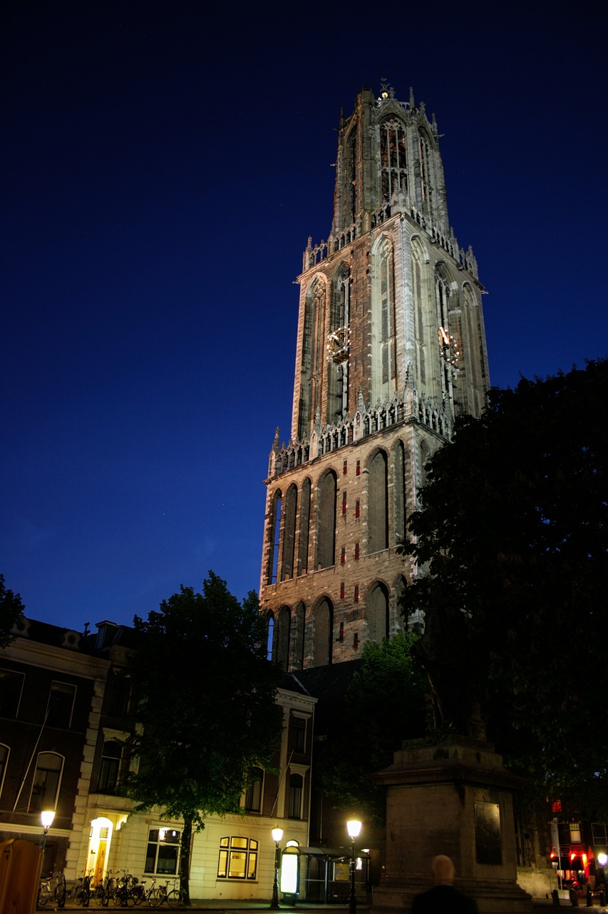
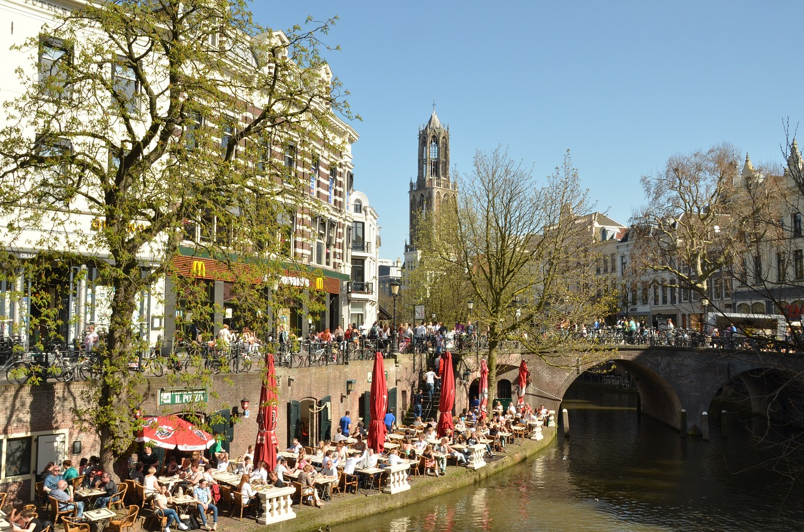
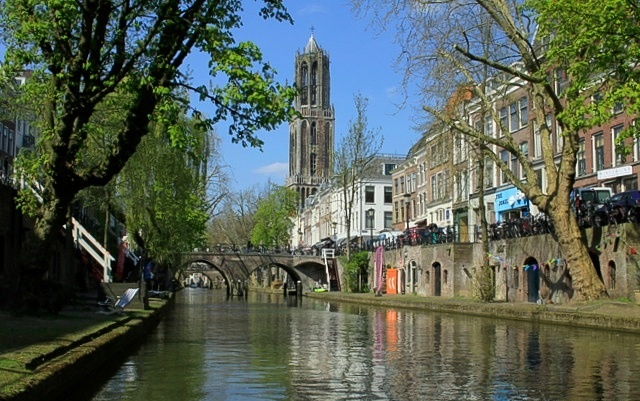
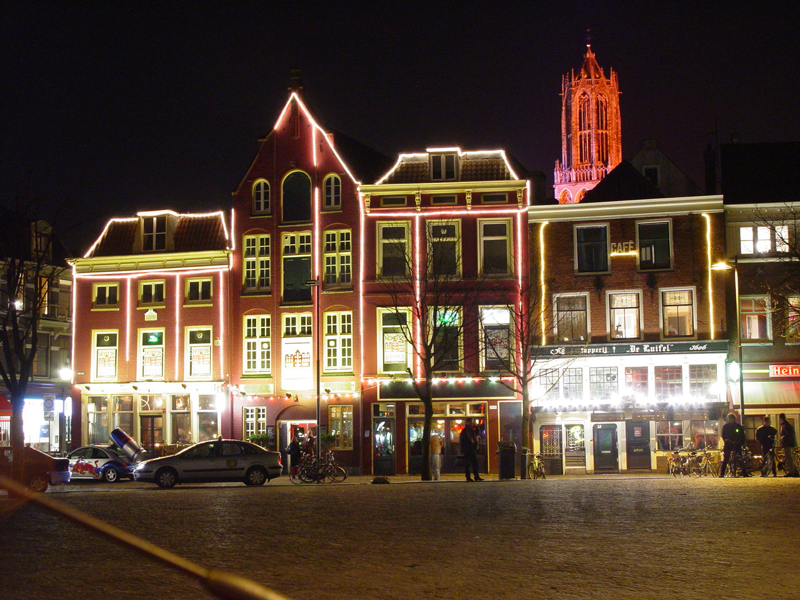
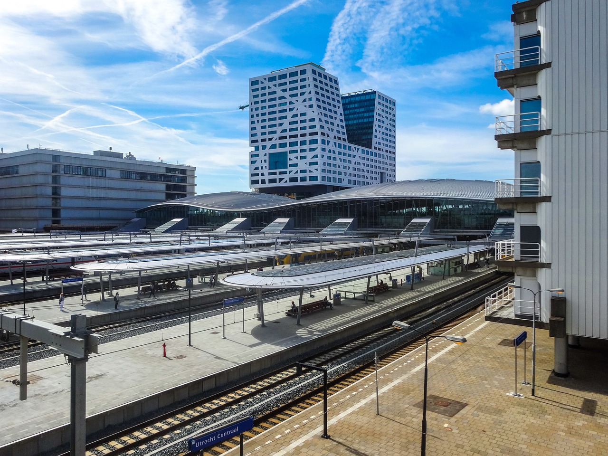

<!DOCTYPE html PUBLIC "-//W3C//DTD XHTML 1.0 Transitional//EN" "http://www.w3.org/TR/xhtml1/DTD/xhtml1-transitional.dtd">

<html xmlns="http://www.w3.org/1999/xhtml" xml:lang="en" lang="en">

<head>


  <meta http-equiv="Content-Type" content="text/html; charset=iso-8859-1" />

  <title>ICDE 2024 Organizing Committee</title>


  <link rel="stylesheet" href="icde2024.css" />
</head>
</html>
<html xmlns="http://www.w3.org/1999/xhtml" xml:lang="en" lang="en">
<body style="background-color: rgb(255, 255, 255); font-family: arial; font-size: 10pt;">


<table cellspacing=0 cellpadding=0 border=0 width="100%" >
<tr><td align="center">
<table style="width: 1040px; height: 800px;" cellpadding="0" cellspacing="0" border=0>


  <tbody>


    <tr style="height: 151px;">


      <td width="100%" align="left">


<table width="1040" height="120" border="0" align="left" cellpadding="0" cellspacing="0" bordercolor="#CCCCCC">
<tr>
<td  align="left" valign="middle" colspan=2> </td>		
</tr>
<tr>
<td valign="bottom"><hr/></td>
</tr>
</table>


<!-- end header !--></td>
    </tr>


    <tr	valign="top">


      <td>

      <table style="width: 100%; height: 100%;" cellpadding="1" cellspacing="0" border=0>


        <tbody>


          <tr valign="top">
			<!-- start side panel !-->
<td style="width: 23%;">
<div id="sidebar">
<table style="width:100%"><tr><th class="tblCellHead" style="background-color:#73231A;color:white;">General Information</th></tr></table>
<ul>
<li><a href="index.html">Conference Overview</a></li>
<li><a href="conference_officers.html">Conference Officers</a></li>
<li><a href="di.html">Diversity and Inclusion</a></li>
</ul>

<table style="width:100%"><tr><th class="tblCellHead" style="background-color:#73231A;color:white;">Program</th></tr></table>
<ul>
<li><a href="program.html">Detailed Program </a></li>
<li><a href="keynotes.html">Keynotes </a></li>
<li><a href="papers.html">Research Papers</a></li>
<li><a href="invited.html">Industry Invited Talks</a></li>
<li><a href="industry.html">Industry &amp; Application  Papers</a></li>
<li><a href="tutorials.html">Tutorials </a></li>
<li><a href="demos.html">Demonstrations</a></li>
<li><a href="DEFT.html">Future Technologies Papers</a></li>
<li><a href="phd.html">PhD Symposium Papers </a></li>
<li><a href="lightning.html">Lightning Talks</a></li>
<li><a href="TKDE.html">TKDE Posters</a></li>
<li><a href="sponsorTalks.html">Sponsor Talks</a></li>
<li><a href="panel.html">Panels</a></li>
<li><a href="workshops.html">Workshops </a></li>
<li><a href="awards.html">Awards </a></li>
<li><a href="empty.html">Social Events </a></li>
</ul>

<table style="width:100%"><tr><th class="tblCellHead" style="background-color:#73231A;color:white;">Participant Information</th></tr></table>
<ul>
<li><a href="registration.html">Registration</a></li>
<li><a href="venue.html">Venue  &amp; Accommodation</a></li>
<li><a href="travel.html">Travel Information</a></li>
<li><a href="studentAwards.html">Student Travel Awards</a></li>
</ul>

<table style="width:100%"><tr><th class="tblCellHead" style="background-color:#73231A;color:white;">Calls for Contributions</th></tr></table>
<ul>
<li><a href="CFP_research.html">Research</a></li>
<li><a href="CFP_industry.html">Industry and Application</a></li>
<li><a href="CFP_demos.html">Demonstrations</a></li> 
<li><a href="CFP_tutorials.html">Tutorials</a></li> 
<li><a href="CFP_DEFT.html">Future Technologies Special Session</a></li>
<li><a href="empty.html">Panels</a></li> 
<li><a href="CFP_workshops.html">Workshops</a></li>
<li><a href="CFP_phd.html">PhD Symposium</a></li>
<li><a href="CFP_lightning.html">Lightning Talks</a></li>
<li><a href="CFP_TKDE.html">TKDE Posters</a></li>
</ul>
	
<table style="width:100%"><tr><th class="tblCellHead" style="background-color:#73231A;color:white;">Dates and Guidelines</th></tr></table>
<ul>
<li><a href="important_dates.html">Important Dates</a></li>
<li><a href="empty.html">Formatting Guidelines</a></li>
</ul>

<table style="width:100%"><tr><th class="tblCellHead" style="background-color:#73231A;color:white;">Sponsorship Opportunities</th></tr></table>
<ul>
<li><a href="conference_opportunities.html">Contribution Packages</a></li>
<li><a href="conference_opportunities.html"></a></li>
</ul>
</div>
<!-- end side panel !-->       </td>


                    <td style="border-left: 1px solid #CCCCCC; width: 100%; height: 100%" valign="top"><table border="0" width="100%" height="100%" id="table1">
				        <tr>
				          <td align="left" valign="top">
				             <div id="main"> 

<p align="center"><table border="0" width=100%>
</td></tr>
</table>
</div></p>
		</div>
	</div>
				          
				          
	<div id="main"> 
<p>
	<table cellspacing="0" cellpadding="0" border=0 width=100%>
	<tr><td>
	<!-- HERE STARTS THE CONTENT. -->
	
	<div style="text-align: center;">
		<a href="https://kinepolis.nl/bioscopen/kinepolis-jaarbeurs-utrecht/info/"></a>
	   	<a href="https://kinepolis.nl/bioscopen/kinepolis-jaarbeurs-utrecht/info/"></a> 
		</div>

	<p><div class="title">Conference Venue</div>

		<p/>
			The event is going to take place in <a href="https://kinepolis.nl/bioscopen/kinepolis-jaarbeurs-utrecht/info">Kinepolis Jaarbeurs theater</a> in Utrecht. It is located very conveniently 5 min by foot from Utrecht central train station. 
			It's full address is: <br/> <p/>
			
			&nbsp;&nbsp;Jaarbeursboulevard 300<br/>
			&nbsp;&nbsp;3521 BC Utrecht<br/>
			&nbsp;&nbsp;The Netherlands<br/>

			and can be seen on the map by clicking <a href="https://goo.gl/maps/bQ5QzG6TEvGyWFs29">here.</a>

	<p>
		<div class="title">Accomodations</div>
		<p/>
		The conference organization does not provide any special deal with a specific hotel. Utrecht is a highly touristic and business city, hence it offers multiple accomodation options at every level. 
		The location of the venue is right at the center, which means there is a great deal of options to choose from. 
		It is up to the participants to choose the one that fits them best. 
		The city has an excellent transportation network, so it is possible to look for accomodation even a little further from the center. 
		It is also a very safe city so walking is highly recommended to enjoy its beauty. 
		And for those that would like to have the full dutch experience, ... renting a bike and moving around is also an excellent and safe choice. 
		The city has everywhere bike lanes.
	</p>
	   
	

	<p><div class="title">About Utrecht </div>
		<p/>
			Utrecht, located in the heart of the Netherlands, is rich in history and culture, offering a variety of attractions for tourists.
			One of the top tourist attractions is the Dom Tower (Domtoren). Standing at 112 meters tall, the Dom Tower is the tallest church tower in the Netherlands and offers an unparalleled view of the city from the top.
			Visitors can climb the tower to experience breathtaking views and learn about its historical significance.

			For those that would like to remember how it is to feel like a child, the <b><a href="https://nijntjemuseum.nl/en/">Nijnt (Miffy) Museum</a></b> awaits them. 
		
		Other attractions include: <p/>

    <ul>
        <li><strong>The Utrecht Cathedral (Domkerk)</strong>: A beautiful example of Gothic architecture connected to the Dom Tower.</li>
        <li><strong>The Museum Speelklok</strong>: Showcases a collection of automatically playing musical instruments.</li>
        <li><strong>The Utrecht Canals</strong>: Especially the Oudegracht, where you can enjoy a leisurely walk along the water or a boat tour.</li>
        <li><strong>The Railway Museum (Het Spoorwegmuseum)</strong>: It offers a fascinating look into the history of trains and railways in the Netherlands. Here is where the conference banquet will take place</li>
    </ul>
	More places to visit can be found on the <a href = "https://www.discover-utrecht.com/"> Discover Utrecht</a> web site. 	  
	<p/>
	
	
	<p/>
	<a href="https://upload.wikimedia.org/wikipedia/commons/8/81/Domtoren_vanaf_de_Stadhuisbrug.JPG"></a>
   	<a href="https://upload.wikimedia.org/wikipedia/commons/7/76/Neude_at_night.jpg"></a> 
	<p/>
	
	<!-- HERE ENDS THE CONTENT.-->
						
</td></td>       	  
</tr></table>


	             
	                </div>
	                
			               </td>
				        </tr>
				        <tr><td>
				        </td></tr>
			            </table>
			            

			            
				      <!--end of mainbody-->
            
			<p> <br />
            </p>            <hr> <div class="discl"><b>Disclaimer:</b> The Organizing Committee of a ICDE conference is not liable for any loss or damage arising from the activities of this particular conference as exercised by its agents: conference organizers, carriers, proceedings, publications and program committee.</div>
				       </td>
			<td style="width: 1%"></td>
          </tr>
        </tbody>
      </table>      </td>
    </tr>


<!--footer-->
  
       <tr>
	<td class="linkfooterbar" width="100%" align="center" bgcolor="#7d1a14">

<div id="textbar">&copy; ICDE 2024</div>
</tr>

<tr> 
    <td align="center">
      <table cellspacing=0 cellpadding=1 border=0 width=100% bordercolor="#077431">
	  <tr>
	  <td align="center" class="linkfooter">
        </p>        </td>
		</tr>
	  </table>    </td>
</tr>
  
  </tbody>
</table>
</td></tr></table>

</body>

</html>


	
